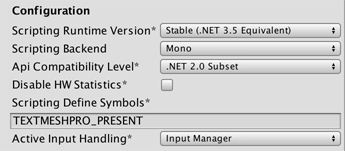

Adaptive Text Component
The AdaptiveText component extends the AdaptiveContent class. In addition to controlling whether its GameObject is active, the AdaptiveText component also controls the text of a Text, Text Mesh, or Text Mesh Pro component attached to the same GameObject.
Important: To use Tutorial Manager with TextMeshPro, you must add the TEXTMESHPRO_PRESENT scripting define symbol:
Open the Player Settings window (menu: Edit > Project Settings > Player).
Click to open the Other Settings section, if necessary.
Under Configuration, enter
TEXTMESHPRO_PRESENTinto the Scripting Define Symbols text box.
When you push your tutorial configuration to the Tutorial Manager service, the Tutorial Manager creates a remote text field on the Tutorial Manager dashboard for each AdaptiveText component. At runtime, the value of the remote field takes precedence over the value entered in the Unity Editor. Use the Push and Pull Data buttons on the Tutorial Editor window to keep the text in your Unity project in sync with the text in the dashboard.
Only bind a single AdaptiveText component to any individual tutorial step. (If you bind multiple AdaptiveText components to a step, the text of all of these components is updated to the value of the same remote text field.) If you need more than one text component for a step, you can use AdaptiveContent components instead. However, only the text associated with the (single) AdaptiveText component can be updated remotely from the Tutorial Manager dashboard.
See Managing your Adaptive Text for information about controlling the text associated with an AdaptiveText component using the Tutorial Manager dashboard.
AdaptiveText properties
The AdaptiveText component is a subclass of AdaptiveContent.

A GameObject with an AdaptiveContent component
| Element | Purpose |
|---|---|
| Binding Keys | Each key binds the AdaptiveComponent to a tutorial and step. (Enter the keys for your tutorials and steps on the Tutorial Editor window.) |
| Binding +, - buttons | Click + to add bind the component to an additional tutorial step. Click - to remove a binding. Each component must have a minimum of one binding. |
| Respect ‘off’ decision | When checked (true), the associated text objects are only enabled when the Tutorial Manager has decided the default tutorial should be shown (TutorialManager.GetDecision() returns true). When unchecked (false), the associated text objects are enabled whenever the tutorial step is started by the Tutorial Manager. |
| Ignore if remote is empty | When checked, the Tutorial Manager does not update the associated text component if the remote field contains an empty string. When unchecked, entering an empty string into the remote field removes the text from the text component. The Ignore if remote is empty setting applies both at runtime and when you pull data from the service. |
Add AdaptiveText Components to Your Tutorials
Once you have defined your tutorial outline, you can optionally add adaptive components to your tutorial. Put an AdaptiveText component on any tutorial GameObjects that contain a Text, TextMesh, or TextMeshPro object; use an AdaptiveContent component for other GameObjects.
To add an AdaptiveText component:
Select the GameObject in your scene Hierarchy.
In the Inspector window, click Add Component.
Click Analytics in the Add Component menu.
If the GameObject contains a Text, TextMesh, or TextMeshPro component, select the AdaptiveText component; (otherwise, use an AdaptiveContent component).
Bind the component to a tutorial and step using the Binding Keys list.
To bind a GameObject to more than one tutorial step, click the + button next to the Binding Keys property.